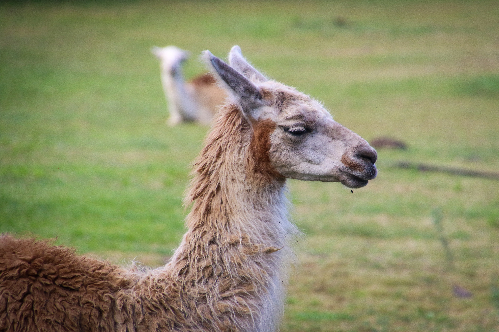
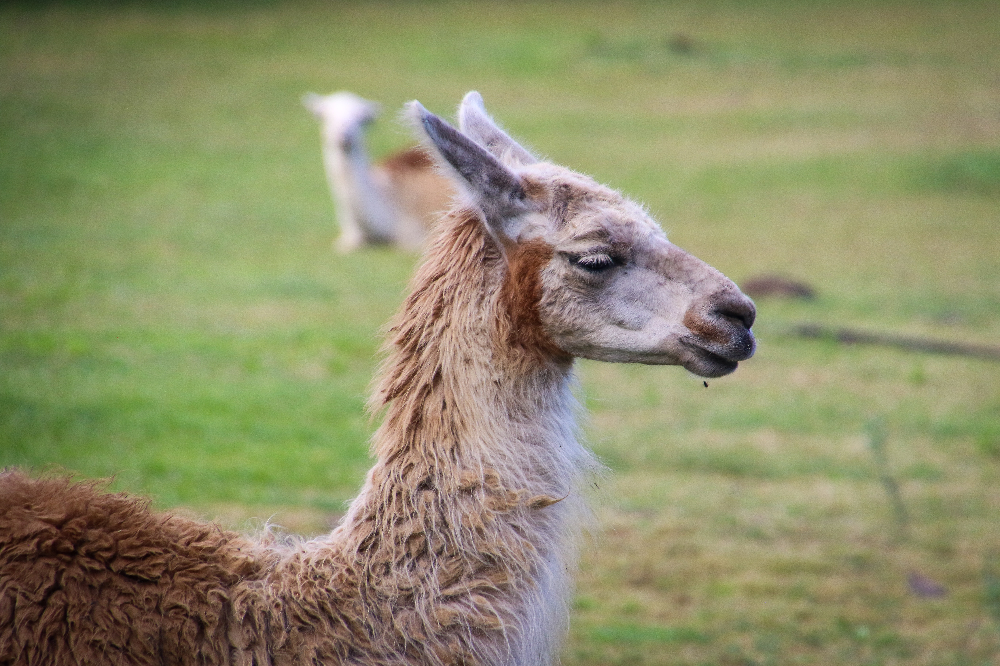

La Colchis ou Colchide est une région qui est entourée par le Pont, la
mer Noire, la rivière Corax, la chaîne du Grand Caucase, l'Ibérie, les
monts Moschici et l'Arménie.
Les principales cités de la Colchide sont Dioscourias, sur les rives du
Pont-Euxin, Sarapana, Phasis, Pityus, Apsaros, Surium, Archéopolis,
Macheiresis et Cyta.
Bien plus qu'un simple pays, la Colchis saura vous envoûter par sa
mythologie, ses paysages et sa culture.
 
